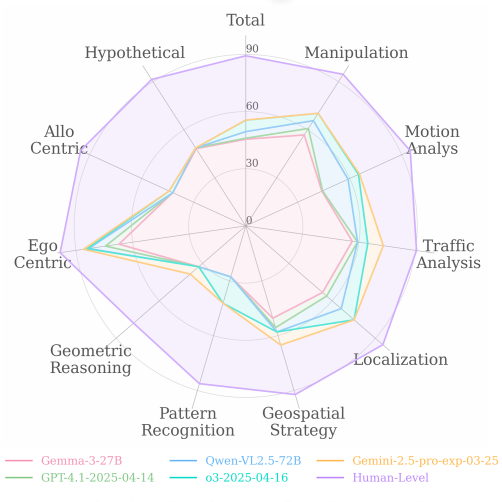

|
Mengdi Jia I am currently a mechatronics engineer based in Beijing. Previously, I received my Master's degree from Anhui Agricultural University, advised by Prof. Chengmao Cao, and my Bachelor's degree from Hebei Agricultural University. During my research internship at Tsinghua University, I contributed to projects including OmniSpatial and CTRL, working closely with Zekun Qi and Li Yi. As an independent researcher, my primary focus is on embodied intelligence and spatial reasoning. |

|
News
|
Publications* indicates equal contribution |
|  |
OmniSpatial: Towards Comprehensive Spatial Reasoning Benchmark for Vision Language Models
Mengdi Jia, Zekun Qi*, Shaochen Zhang, Wenyao Zhang, XinQiang Yu, Jiawei He, He Wang, Li Yi Under review at NeurIPS 2025 Project Page / arXiv We present OmniSpatial, a benchmark for evaluating spatial reasoning abilities in vision-language models. It covers four major categories and 50+ subtypes, totaling over 1.5K QA pairs. Experiments reveal significant limitations in existing models and suggest directions for improvement. |
|
|